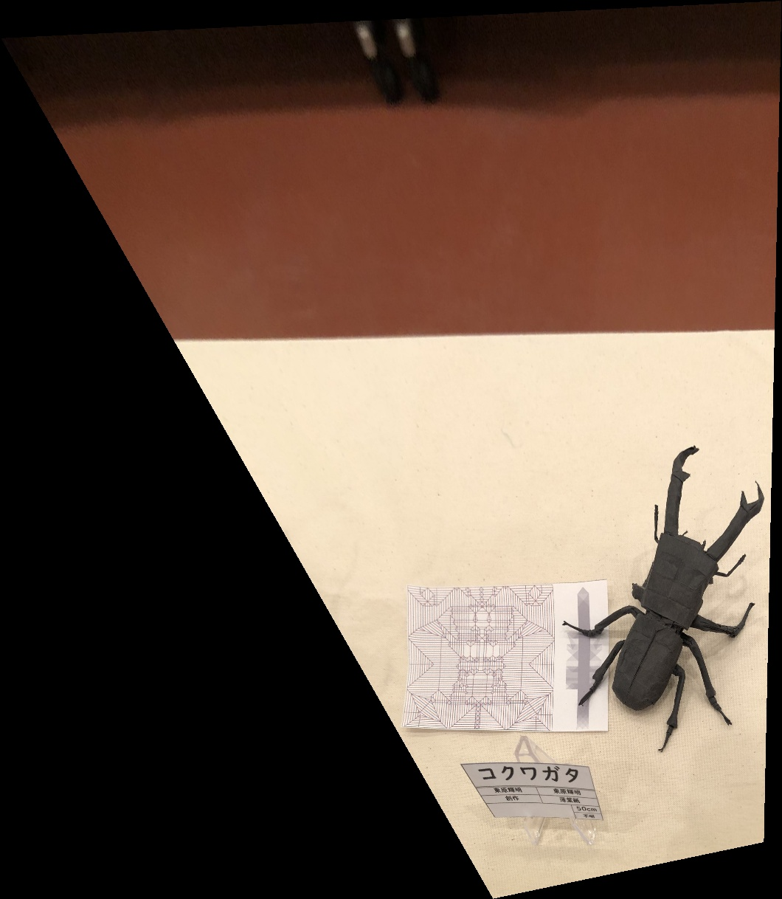

1 Take Photos
Take two photos of a scene with a camera. The photos should have some overlap between them.
All these pictures are taken with only a planar rotation of the phone with the COF not changing position (the best I can...)

Room Left

Room Right

Prism Left

Prism Right

Twin Falls Left

Twin Falls Right
2 Recover Homography
- Definition: A homography is a transformation that maps points from one plane to another, typically used in image processing for tasks like image alignment and stitching.
- Use Case: The matrix represents a projective transformation, which preserves straight lines but not necessarily angles or lengths.
- Equation: The transformation is defined by eight parameters, computed by solving a system of linear equations using corresponding points from two images.
3 Warp and Rectification
- Use either forward or inverse warping and avoid aliasing during resampling.
- Consider using
scipy.interpolate.griddatafor a vectorized solution. - Predict the bounding box of the resulting image and manage unfilled pixels using an alpha mask.
- Here are some rectification result. With hand-written, known desination size.
Kindle

Kindle Rectified

Cp

Cp Rectified

Cp2
Cp2 Rectified
4 Stitch and Blend
- Blend images into a mosaic using weighted averaging to avoid strong edge artifacts.
- Warp the images so they’re registered and choose to warp into a reference projection or a new one.
- Manage blending by using an alpha channel and consider using a Laplacian pyramid for blending if needed.
- I have huge difficulty resolving the blending issue and masking, so here are some very poor stitching result! I didn't do the blending, only the alignment.
Room Left
Room Right

Room Mosaic